Negozio con ingresso autonomo: si paga comunque il portiere?
Chi possiede un locale commerciale con ingresso autonomo si chiede spesso se debba contribuire al servizio di portierato che, in apparenza, non utilizza. La risposta ruota attorno …
Domanda di mediazione condominiale: come redigerla per evitare l'improcedibilità
Nelle controversie tra condomini o con l'amministratore, la mediazione è una condizione obbligatoria prima del processo. Ma non basta avviarla: la domanda deve rispecchiare con pre…
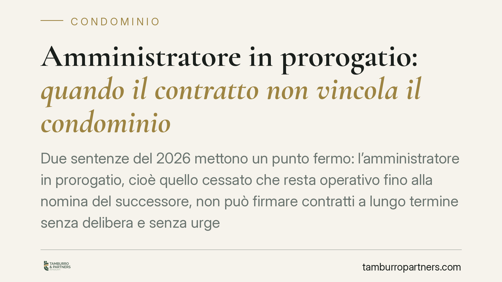
Amministratore in prorogatio: quando il contratto non vincola il condominio
Due sentenze del 2026 mettono un punto fermo: l'amministratore in prorogatio, cioè quello cessato che resta operativo fino alla nomina del successore, non può firmare contratti a l…
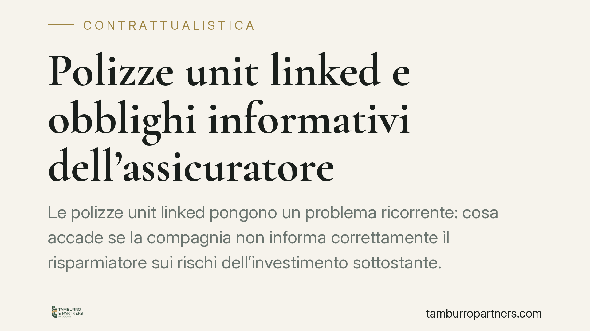
Polizze unit linked e obblighi informativi dell'assicuratore
Le polizze unit linked pongono un problema ricorrente: cosa accade se la compagnia non informa correttamente il risparmiatore sui rischi dell'investimento sottostante. Il tema tocc…
Limite dei 70 anni nella scuola: cosa può cambiare dopo la Corte Costituzionale
Il tetto anagrafico dei 70 anni per il personale scolastico torna al centro del dibattito dopo l'intervento della Corte Costituzionale. La questione tocca migliaia di docenti e col…
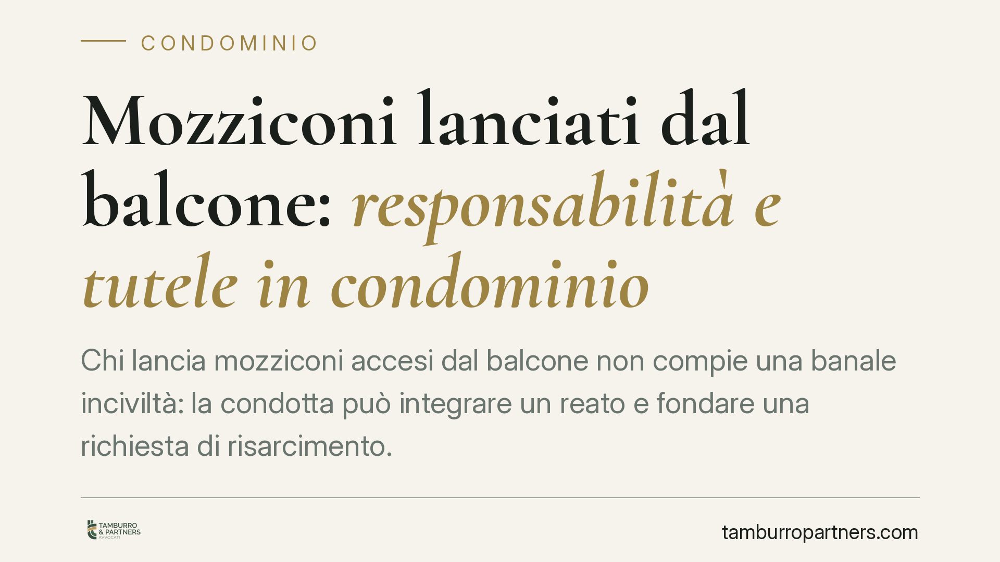
Mozziconi lanciati dal balcone: responsabilità e tutele in condominio
Chi lancia mozziconi accesi dal balcone non compie una banale inciviltà: la condotta può integrare un reato e fondare una richiesta di risarcimento. Il vero ostacolo per chi la sub…
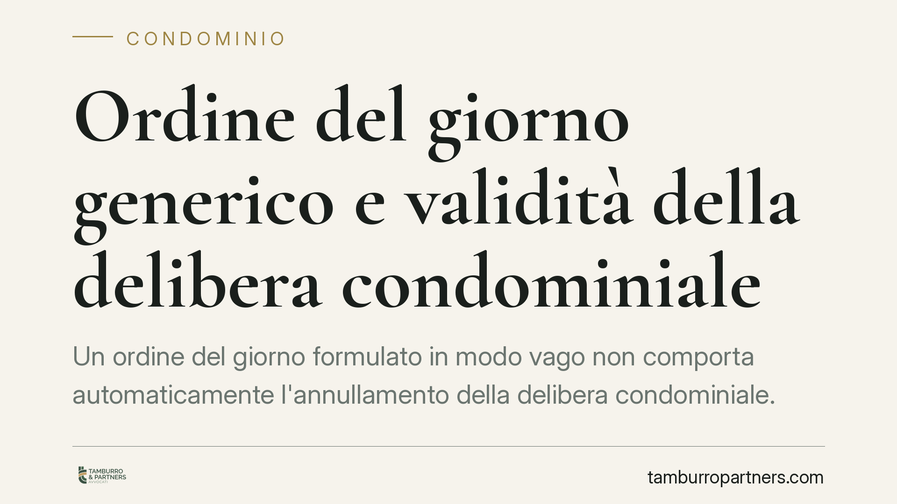
Ordine del giorno generico e validità della delibera condominiale
Un ordine del giorno formulato in modo vago non comporta automaticamente l'annullamento della delibera condominiale. Secondo la Cassazione, ciò che conta è che i condomini abbiano …
Opzione donna 2026: il diritto maturato resta esercitabile
Nonostante la mancata proroga per il 2025, l'accesso a Opzione donna resterebbe possibile per chi ha maturato i requisiti entro il 31 dicembre 2024. Il tema riguarda molte lavoratr…
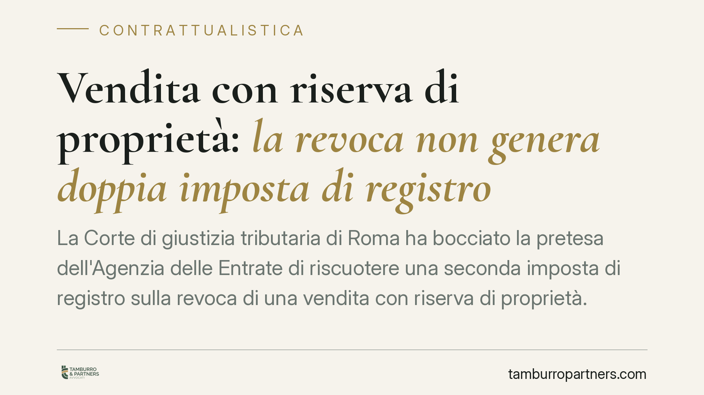
Vendita con riserva di proprietà: la revoca non genera doppia imposta
La Corte di giustizia tributaria di Roma ha respinto la pretesa dell'Agenzia delle Entrate che chiedeva una nuova imposta di registro sulla revoca di una vendita con riserva di pro…
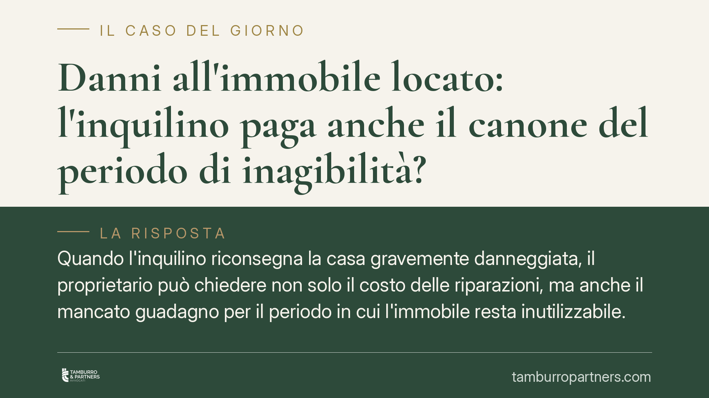
Danni all'immobile locato: l'inquilino paga anche il canone del periodo di inagibilità?
Quando l'inquilino riconsegna la casa gravemente danneggiata, il proprietario può chiedere non solo il costo delle riparazioni, ma anche il mancato guadagno per il periodo in cui l…
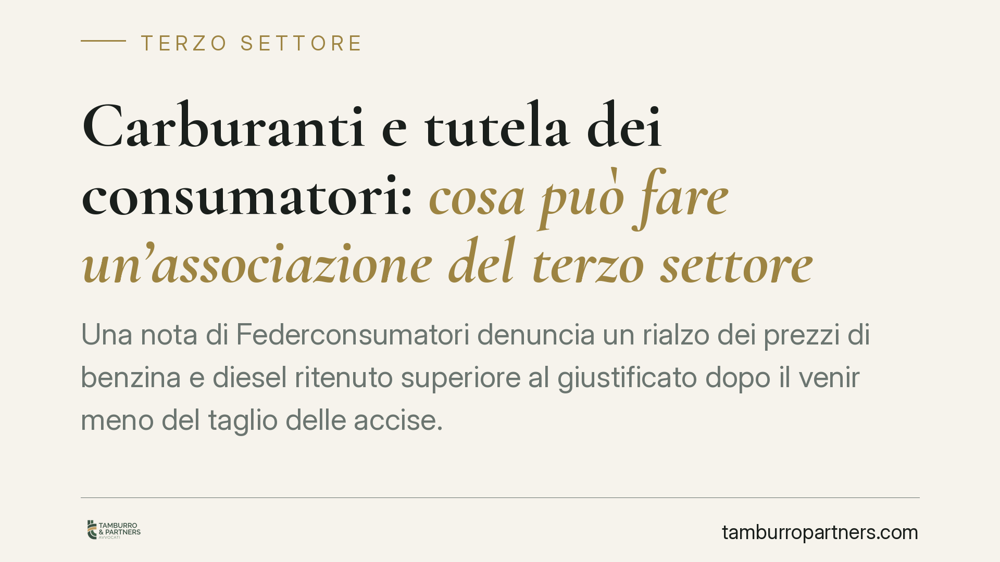
Carburanti e tutela dei consumatori: cosa può fare un'associazione del terzo settore
Una nota di Federconsumatori denuncia un rialzo dei prezzi di benzina e diesel ritenuto superiore al giustificato dopo il venir meno del taglio delle accise. Il caso offre l'occasi…
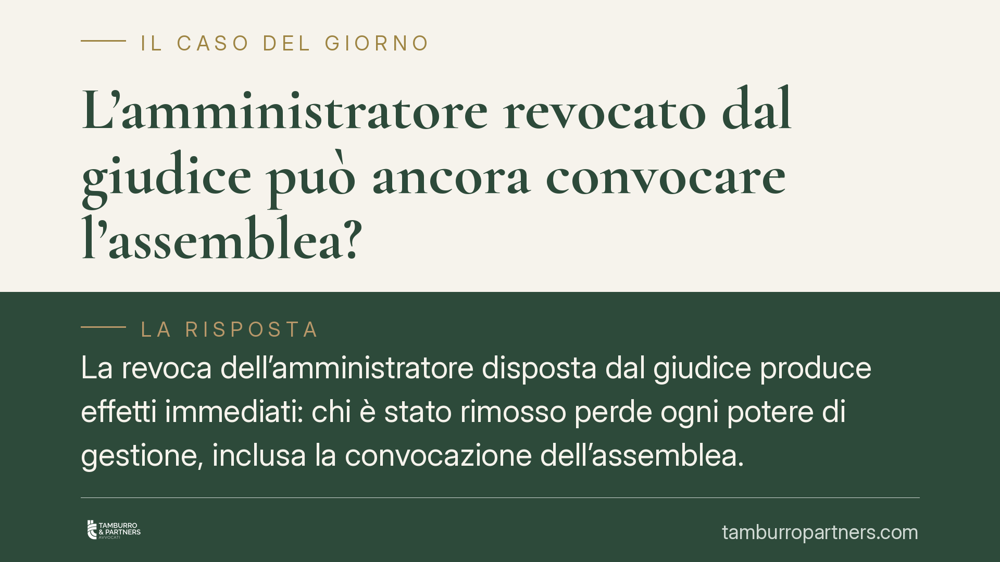
L'amministratore revocato dal giudice può ancora convocare l'assemblea?
La revoca dell'amministratore disposta dal giudice produce effetti immediati: chi è stato rimosso perde i poteri gestori, compreso quello di convocare l'assemblea. Le delibere assu…
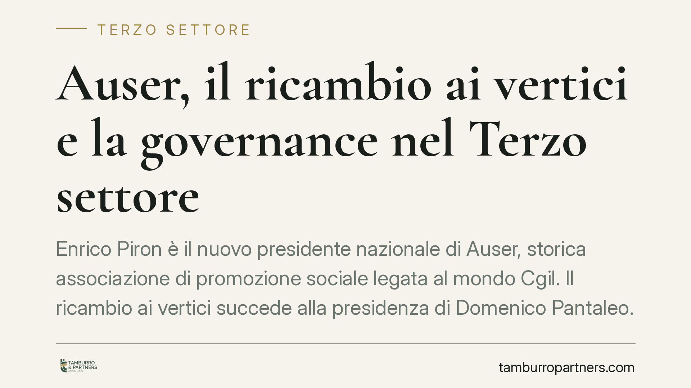
Auser, il ricambio ai vertici e la governance nel Terzo settore
Enrico Piron è il nuovo presidente nazionale di Auser, storica associazione di promozione sociale legata al mondo Cgil. Il ricambio ai vertici succede alla presidenza di Domenico P…
Fiscalità del Terzo settore: il nodo commerciale/non commerciale
La qualificazione fiscale delle attività degli enti del Terzo settore resta uno dei temi più delicati della riforma. La distinzione tra attività commerciali e non commerciali, disc…
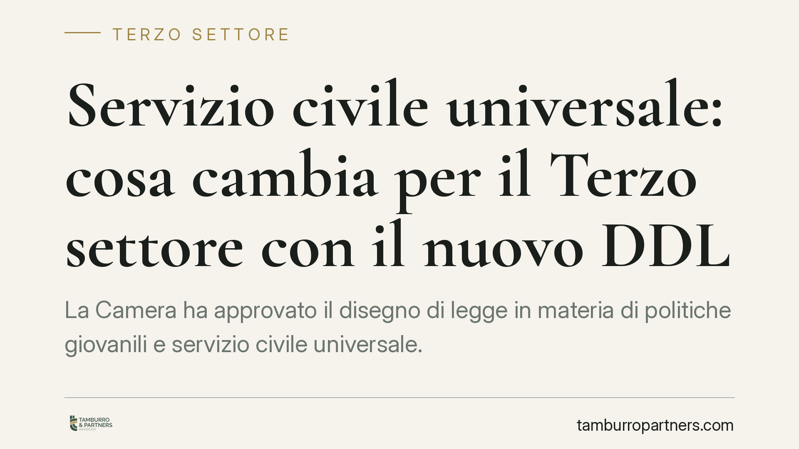
Servizio civile universale: cosa cambia per il Terzo settore con il nuovo DDL
La Camera ha approvato il disegno di legge in materia di politiche giovanili e servizio civile universale. La CNESC segnala il rischio di un ridimensionamento del Terzo settore e l…
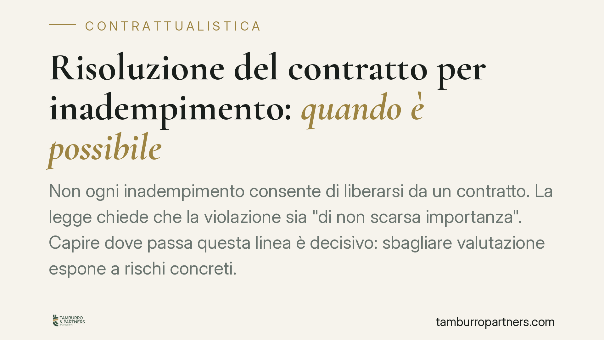
Risoluzione del contratto per inadempimento: quando è possibile
Non ogni inadempimento consente di liberarsi da un contratto. La legge chiede che la violazione sia "di non scarsa importanza". Capire dove passa questa linea è decisivo: sbagliare…
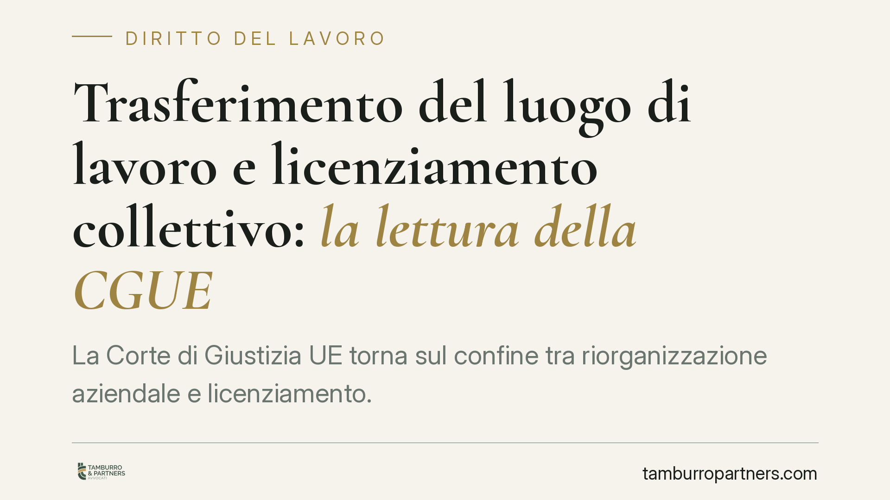
Trasferimento del luogo di lavoro e licenziamento collettivo: la lettura della CGUE
La Corte di Giustizia UE torna sul confine tra riorganizzazione aziendale e licenziamento. Secondo la pronuncia, un trasferimento del luogo di lavoro che il dipendente non è tenuto…
Danni all'appartamento a fine locazione: chi paga?
Alla riconsegna dell'immobile locato emerge spesso il contrasto sui danni: usura normale o deterioramento imputabile all'inquilino? La questione non è secondaria, perché il Codice …
Casa familiare assegnata: chi paga le spese condominiali
Dopo la separazione, la casa familiare viene spesso assegnata al genitore convivente con i figli. Ma chi paga le spese condominiali? E chi partecipa alle decisioni dell'assemblea? …
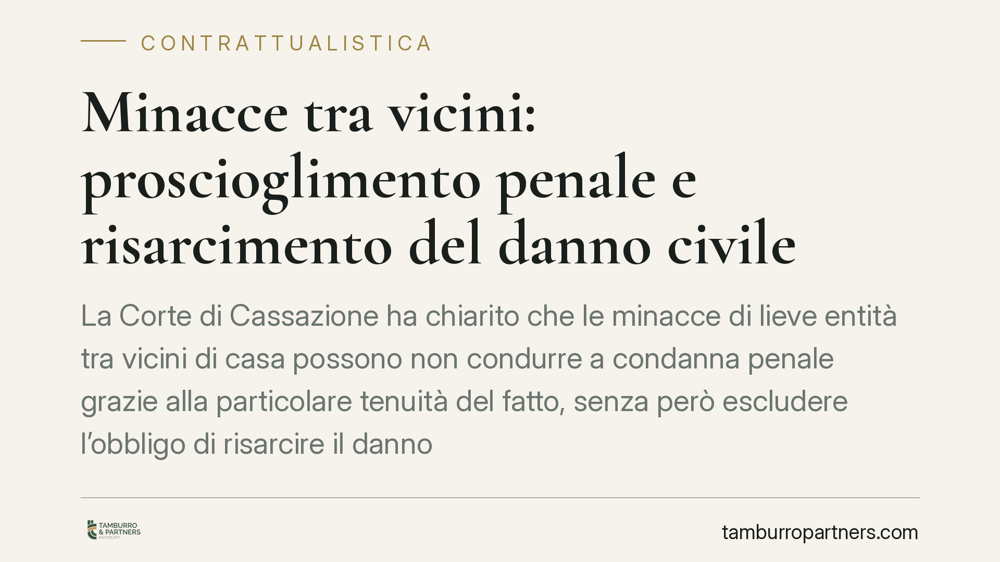
Minacce tra vicini: proscioglimento penale e risarcimento del danno civile
La Corte di Cassazione ha chiarito che le minacce di lieve entità tra vicini di casa possono non condurre a condanna penale grazie alla particolare tenuità del fatto, senza però es…

Delibere condominiali preparatorie: perché non si impugnano
Il Tribunale di Catania ha ribadito un principio spesso frainteso: le delibere condominiali meramente preparatorie non possono essere impugnate. Senza un effetto economico concreto…

Amministratore che non comunica i morosi: la responsabilità verso i creditori del condominio
Il creditore del condominio ha diritto di conoscere i nomi dei condomini morosi per agire nei loro confronti. Quando l'amministratore tace, può esporre sé stesso a una responsabili…

Clausole delle polizze e termine dei 30 giorni: quando la doppia firma manca
La clausola che fa decadere dal diritto all'indennizzo chi denuncia il sinistro oltre trenta giorni è una clausola vessatoria: senza specifica approvazione per iscritto resta ineff…

L'amministratore dimissionario può convocare l'assemblea? Sì, in prorogatio
L'amministratore che si è dimesso resta in carica fino alla nomina del successore e può convocare l'assemblea condominiale. Il principio è quello della prorogatio imperii, che gara…

Chiusura dei balconi: la delibera unanime vale come contratto
La Corte d'Appello di Catanzaro conferma un principio consolidato: solo una delibera approvata all'unanimità può autorizzare interventi sui balconi privati, come la loro chiusura. …

Spese autoclave condominiale: millesimi o uso?
Chi abita ai piani bassi paga meno per l'autoclave che spinge l'acqua ai piani alti? No. Secondo l'orientamento consolidato della Cassazione, le spese dell'autoclave condominiale s…

Mobbing orizzontale: quando il datore di lavoro risponde delle condotte dei colleghi
La Cassazione torna sul cosiddetto mobbing orizzontale, cioè le condotte persecutorie messe in atto dai colleghi di lavoro. Il datore risponde del danno subito dal dipendente se, p…

Phishing sul lavoro: quando il dipendente rischia il licenziamento
Un dipendente che cade in una truffa informatica può perdere il posto? La questione tocca il perimetro dell'obbligo di diligenza sul lavoro. Chi gestisce dati e pagamenti risponde …

Il preposto alla sicurezza: chi è e di cosa risponde in caso di infortunio
Il preposto è la figura che vigila sull'applicazione concreta delle misure di sicurezza nei luoghi di lavoro. Dopo la riforma del 2021 il suo ruolo è stato rafforzato, con obblighi…

Muffa nell'immobile in affitto: si può ridurre il canone?
La comparsa di muffa in una stanza dell'immobile locato è un problema frequente. Molti inquilini reagiscono trattenendo parte del canone. È una scelta rischiosa: la legge non conse…
Cadute su scale bagnate: il condominio paga anche se la pulizia è in appalto
Il condominio è custode delle parti comuni ex art. 2051 c.c.: appaltare le pulizie non sposta la responsabilità verso il danneggiato. Solo rivalsa sull'appaltatore.
RUNTS: chiarimenti Modello D 2024 per enti del terzo settore
Il Ministero del Lavoro chiarisce l'uso del Modello D semplificato per gli ETS con entrate inferiori a 220.000 euro.
Licenziamento disciplinare: contestazione specifica e tempestiva
La Cassazione ribadisce: contestazione non specifica = nullità del licenziamento. Implicazioni operative per HR.
Clausole vessatorie B2B: la nuova lettura del Tribunale di Milano
Anche tra imprese, una clausola di limitazione di responsabilità non specificamente approvata può essere abusiva.
Bonus condominiali: ripartizione spese e delibera assembleare
Con il restringimento delle agevolazioni, le assemblee tornano a deliberare nuovi criteri di ripartizione.
5x1000: nuove regole per le ricevute di rendicontazione
L'Agenzia delle Entrate aggiorna lo schema di rendicontazione. Cosa devono fare gli enti beneficiari entro l'anno.
Ispezione INL: come gestire la richiesta documentale
I tempi di risposta, i documenti obbligatori, i margini di interlocuzione. Checklist operativa per HR.